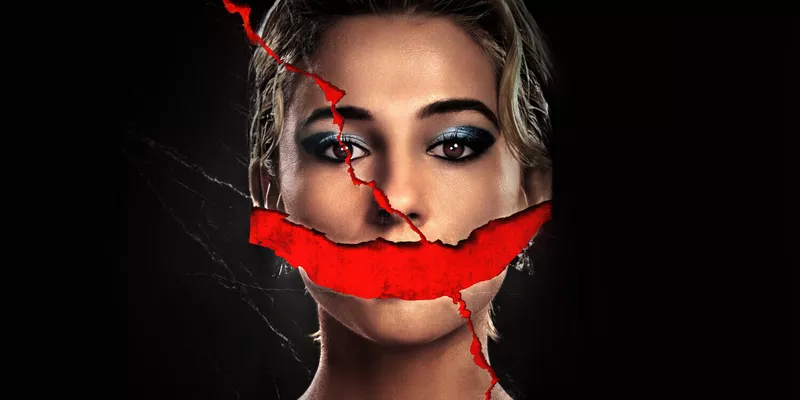
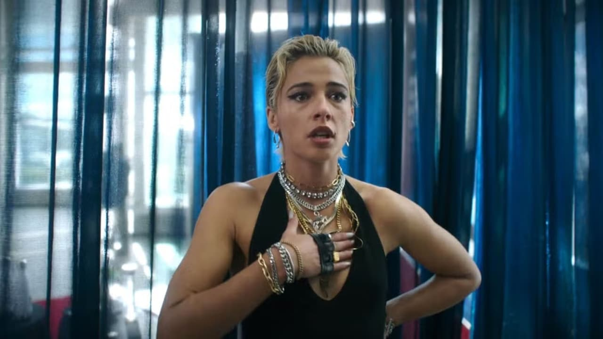
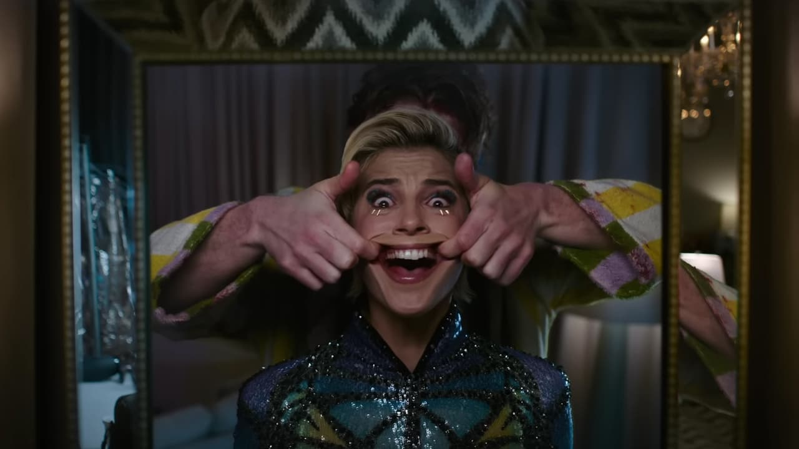
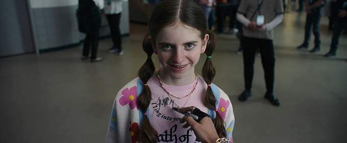

Рецензія на фільм «Усміхайся 2» / Smile 2

17 жовтня в кінотеатрах стартував показ психологічного фільму жахів про
надприродне «Усміхайся 2», який є сиквелом надзвичайно успішного жахастика
«Усміхайся», що вийшов на екрани у 2022 році. У рецензії нижче
розповідаємо, чи спроможний налякати сюжет про зловісно усміхнених людей
цього разу.
Плюси:
фільм цілком якісно працює у жанрі горору про надприродне; чудова
акторська робота від Наомі Скотт; це той рідкісний випадок, коли сиквел
кращий за оригінал;
Мінуси:
після першого фільму зник ефект новизни; нерівний темп оповідання;
сумнівна кінцівка;
7.5/10 Оцінка ITC.ua
Рік тому всесвітньо відома поп-зірка Скай Райлі була наркозалежною, та ще
й потрапила у жахливу аварію, внаслідок якої загинув її бойфренд з рисами
обличчя Джека Ніколсона. Після відновлення та реабілітації наразі співачка
планує велике повернення на сцену, підкріплене масштабним турне. Вона
забула про наркотики та рішуче налаштована вхопитися за свій другий шанс.
Хіба що досі потребує дози вікодину після виснажливих фізичних
навантажень, адже отримані внаслідок автотрощі травми дають про себе
знати.
Якраз напередодні туру героїня стає свідком дуже дивної смерті свого
«дилера» Льюїса: той спочатку неадекватно поводиться, ніби боячись чиєїсь
присутності. А згодом — зловісно вишкіряє зуби, бере важкий металевий диск
від штанги і кількома потужними ударами перетворює власне обличчя на
криваве місиво. Після цього життя Скай буквально перевертається догори
дриґом, про що недвозначно натякають присутні тут круті оберти камери.

«Усміхайся 2» став тим рідкісним прикладом сиквела, який за багатьма
критеріями помітно переважає оригінал. Більше жаху, більше химерних видінь
і крові, підвищення ставок та, зрештою, збільшення масштабів. Хіба що
ефекта якоїсь новизни вже немає, проте це не велика біда, враховуючи те,
як добре фільм реалізовано у його жанрі.
Починається історія з логічного прокладання містку між першою та другою
частинами — Джоел у виконанні Кайла Галлнера намагається передати сутність
якимось поганцям, але дуже невчасно там же опиняється і вищезгаданий
Льюїс. При цьому вся сцена зафільмована одним кадром, без монтажних швів,
а її ефектна кульмінація з кривавим слідом на асфальті у вигляді посмішки
навіює думки на кшталт «ну, якщо вони так тільки розминаються, то страшно
уявити, що там буде далі».
Власне, виразна форма тут відчувається усюди: велика кількість крупних
планів (зокрема, наляканого обличчя Наомі Скотт), які здатні заінтригувати
краще за будь-якого монстра, химерні оберти, ракурси та наїзди камери,
робота зі звуком, інфернальна хореографія сутності, вдала гра з хибними
глядацькими очікуваннями тощо. Навіть усім набридлі й прості за своєю
суттю скримери — та й ті спрацьовують.

«Усміхайся 2» комфортно влаштувався якраз десь посеред «Дзвінком» та
«Воно» — від першого стрічка бере намагання викликати у глядача сироти,
від другого — саспенс, таємничість та натяки на алегоричне трактування.
Під час перегляду ні-ні та й миготять думки про інтерпретацію того, що
відбувається на екрані. А полягає вона у наочній демонстрації ціни слави.
Тобто, у кожного шаленого успіху обов’язково знайдеться інший, далеко не
райдужний бік медалі. І це може проявлятися у найменших дрібницях,
наприклад, такій неприємності, як зустріч з неадекватним фанатом. Що вже
казати про позамежну відповідальність, коли від тебе всі чогось очікують —
численні шанувальники, спонсори та навіть власна мамця-менеджерка.
Усі ці думки тільки посилюються під час фіналу, коли творці дають нам
натуральну «Субстанцію» з її критикою суспільних вимог і очікувань;
щоправда, як і у випадку з сенсаційним боді-горором Коралі Фаджа, такий
перебіг подій трохи псує враження.

Фільм точно не назвеш ідеальним, адже часом його динамічний темп оповіді
необґрунтовано сповільнюється, та й загалом творці дозволяють собі
розмашистий хронометраж більш ніж у дві години, що для жахастика зовсім не
мало. Знову ж таки, кінцівка з одного боку як мінімум дивна, а з іншого —
досить передбачувана. Та ці нюанси важко назвати критичними, бо в цілому
стрічка достатньо моторошна і захоплива, щоб градус залучення в історію не
знижувався аж до фінальних титрів.
У прямому й переносному сенсах яскравіше за всіх тут блищить Наомі Скотт:
окрім того, що вона видала воістину класний перформанс, то ще й не
полінувалася виконати усі пісні (альбом виконавиці Skye Riley можна
послухати на відомих музичних платформах — YouTube Music, Apple Music,
Spotify). А в цілому, фільм вдався. Бо хто-хто, а шанувальники моторошного
жанру точно мають виходити з зали кінотеатру з грайливою посмішкою на
обличчі.